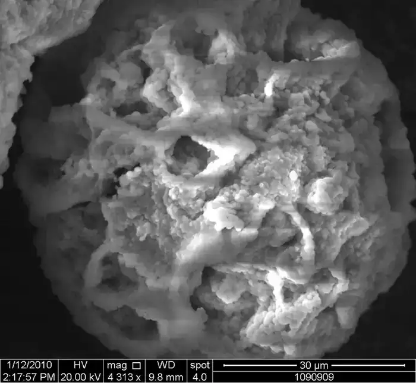
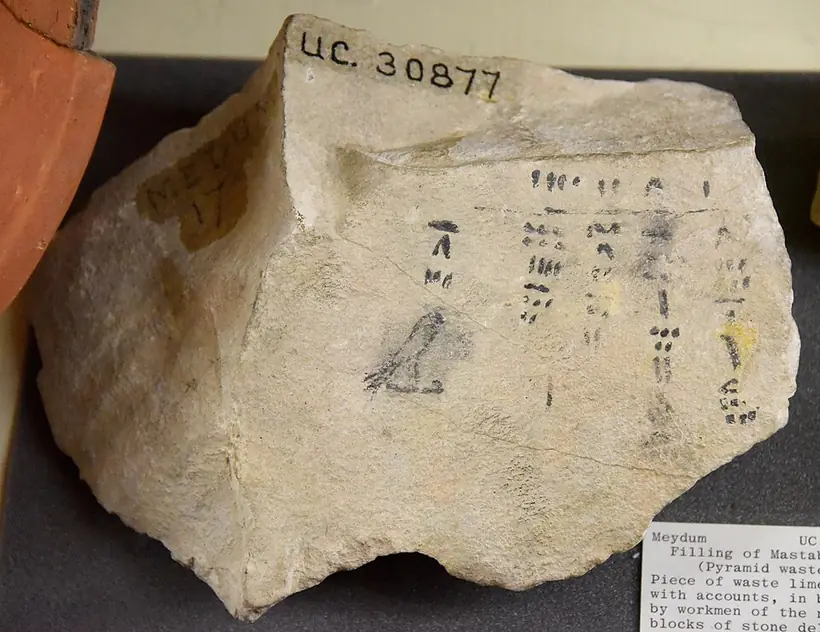
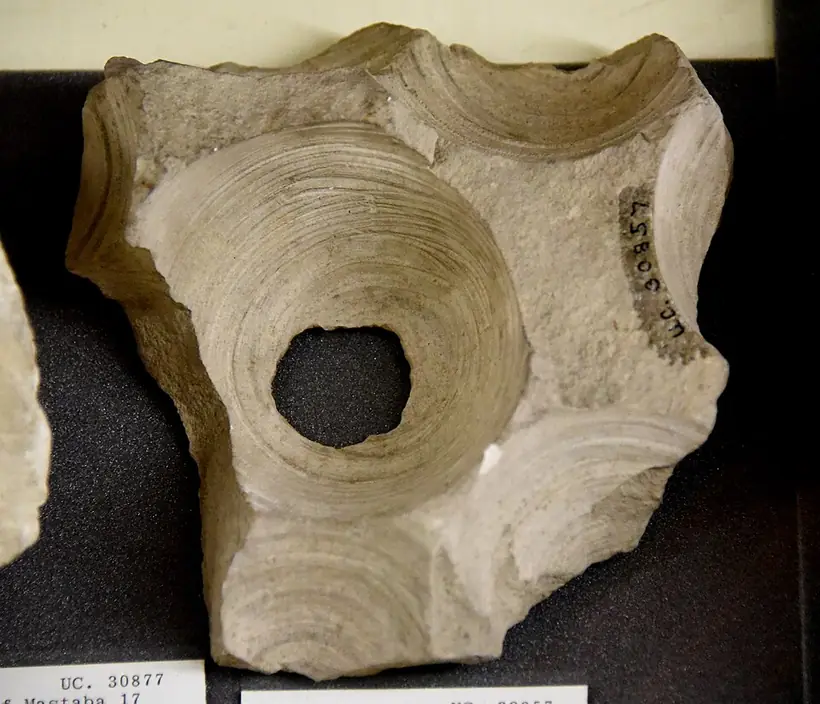

The claim
Joseph Davidovits argued from the late 1970s that the blocks of the Great Pyramid were not cut and hauled but cast in place from a limestone-based geopolymer — a slurry of crushed limestone, lime and sodium carbonate that sets hard. On this account the blocks are artificial stone, poured into moulds.
Maps, diagrams and images






The appeal is that it dissolves the hardest logistics problem: moving 2.3 million blocks of 2.5 tonnes average becomes moving sacks of aggregate.
The evidence on each side
For casting: the blocks are unusually regular, some show what look like mould lines, and there are thin layers of material between courses. Against casting: petrographic analysis finds fossil shells and sedimentary structures continuous across block boundaries, which a cast block would not preserve; the quarry sites at Giza and Tura are extensive and match the block lithology; and the blocks show tool marks consistent with chisels and copper saws.
The strongest recent work is microscopy and X-ray diffraction on the blocks, which finds natural limestone textures rather than a set cement matrix. Casting advocates reply that a geopolymer of crushed limestone would preserve the fossils of the source rock — which is true, and is why the argument has not closed.
Documented: extensive quarries, tool marks, and natural sedimentary fabric in the blocks.
Documented: the blocks are more regular than a naive hand-quarrying picture suggests.
Contested: whether any blocks are cast. A minority of researchers argue yes; the mainstream reads the evidence as quarried.
Not in dispute: the builders, the date, or the purpose. This is a claim about technique, not about aliens.
The honest position: an interesting minority hypothesis that has not overturned the quarrying account.
Why it is in the archive
Because it is a fringe-adjacent claim made by a real chemist with real analyses, and it is filed as live debate rather than fringe for that reason. It is also a useful reminder that 'mainstream' is a description of the weight of evidence, not a slur.
Open resources on this topic
- PapersOpen-access articles: DOAJ · PubMed Central · Internet Archive Scholar
- BooksPublic-domain and borrowable copies: Open Library · Project Gutenberg · Google Books · Internet Archive
Cite this page
Momin, S. (2026). Geopolymer Pyramids. The Larger World Archive. https://drsamonline.github.io/LARGE_GLOBE/geopolymer-pyramids.htmlMomin, Sohil. “Geopolymer Pyramids.” The Larger World Archive, 2026, https://drsamonline.github.io/LARGE_GLOBE/geopolymer-pyramids.html.Momin, Sohil. “Geopolymer Pyramids.” The Larger World Archive, 2026. https://drsamonline.github.io/LARGE_GLOBE/geopolymer-pyramids.html.@misc{geopolymer2026geopolymer,
author = {Momin, Sohil},
title = {Geopolymer Pyramids},
year = {2026},
howpublished = {The Larger World Archive},
url = {https://drsamonline.github.io/LARGE_GLOBE/geopolymer-pyramids.html},
note = {Last reviewed 20 November 2026}
}Last reviewed 20 November 2026 · Corrections policy · this page is not peer reviewed
Sources for this page
- Wikipedia, “Great Pyramid of Giza” — construction and the materials debateen.wikipedia.org
- Wikipedia, “Geopolymer” — the chemistry the claim rests onen.wikipedia.org
- Wikipedia, “Egyptian pyramid construction techniques” — the quarrying accounten.wikipedia.org
- Wikipedia, “Petrography” — the method that tests the claimen.wikipedia.org